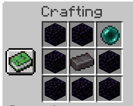
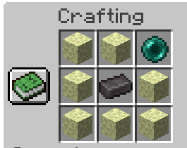
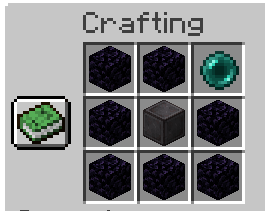

Portals
Building a Portal¶
At a minimum a portal is built using just 4 blocks put together in the shape of a T shape Tetromino. A portalblock and
3 coloured wool blocks. Right-clicking any of these blocks will attempt to dial the next colour portal in the network.

Network¶
The blocks to either side of the portal designate the network to which it belongs. If you think of a phone number the network would be like an area code. Any portal can dial any other portal that belongs to the same network. As there are 16 colours this means that there is a total of 256 networks available.
Address¶
The third coloured wool defines the portal address. The address must be unique amongst all portals that belong to the same network. As there are 16 colours this means that you can have a total of 16 portals able to dial each other per network.
Note
If you attempt to create a portal with the same network and address as another it will un-make itself.
Portal Types¶
The portalblock in the middle will define what type of portal will be generated. This is purely cosmetic and any portal,
regardless of its type, can connect to any other on the same network.
The three built-in portal types are:
- Nether
- End
- Hidden
Nether¶

End¶

Hidden¶

Portal Size¶
The size of the portal is determined by how wide it is. You can make a portal wider by adding obsidian blocks to one or both sides of the network blocks. The height is half the width + 2 blocks. This includes the portal base and frame.

Building in Portal¶
When a portal activates it will create a frame for itself of the colour of the remote portal address and will fill its body with the type of portal being generated.
If any blocks are encountered in this area the portal will ignore them and generate itself around them. This means that any blocks placed in its frame will hide the frame and any blocks placed inside its body will not have a portal generated (but will still trigger a teleport if it is passable). It also means you can place blocks to hide the base layer of the portal and place rails for a minecart.
The only block that has special meaning is an obsidian block. Any obsidian block found in the portal area will prevent the portal generating any higher than just under that block and above that block will not trigger a teleport. This allows you to control the actual height of the portal.

Pressing sneak when placing a block on the base will not trigger a dial.
Direction and Velocity¶
When a player steps through a portal they will exit the destination portal with the same relative direction and velocity they entered. This means if they enter through the front left of a portal they will exit at the back left of the destination portal (relative to its direction). Velocity it maintained so flying through on an elytra will exit at the same height and velocity.
If a portal is blocked on one side, for example if it is built against a wall, then a player will always exit out of the unblocked side no matter which side they entered the source portal.
If a vehicle enters the portal then it and all its passengers will be teleported to the destination portal, maintaining relative direction and velocity. Yes you can have minecart on a rail go between portals.
Size Differences¶
Generally the player will exit out in the same relative position of the destination portal that they entered the source portal.
If the destination portal is shorter, then they will be clipped to its height if entering too high in the source portal.
Likewise, if they are too far right or left in the source portal compared to the destination portal they will be clipped to the corresponding side.
Destinations¶
Portals can dial between worlds on the same server. This allows a portal in the Nether to dial a portal in the overworld or indeed any other custom world.
Info
Multiserver bungeecord support will come in due course.
Crafting Recipe¶
By default, all three portals have a recipe to allow them to be crafted. This can be customized in config.yml.
Nether Portal¶

- Netherite Ingot in Middle
- Ender Pearl top right
- Obsidian every else
End Portal¶

- Netherite Ingot in Middle
- Ender Pearl top right
- End Stone every else
Hidden Portal¶

- Netherite Block in Middle
- Ender Pearl top right
- Obsidian every else